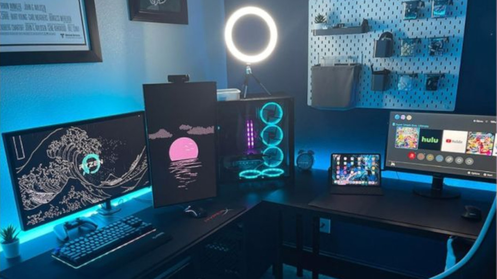
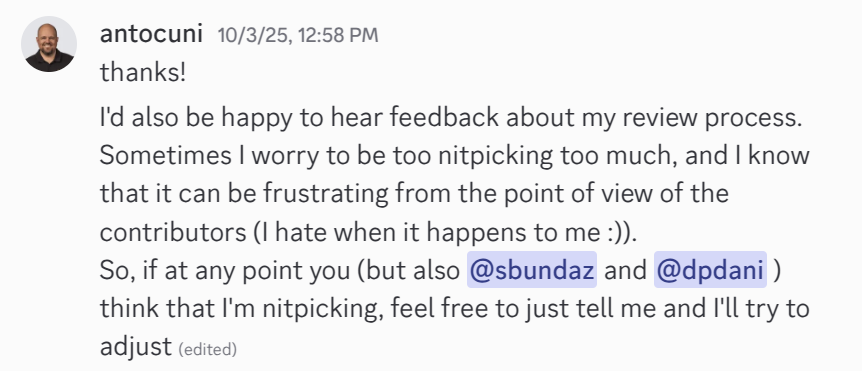

<!-- -*- mode: markdown -*- --> <!-- title: OSS: from code to community --> <style> :root { --r-main-font-size: 40px; /* the default is 40px */ } .reveal h1, .reveal h2, .reveal h3, .reveal h4, .reveal h5 { text-transform: none; } .reveal h1, .reveal h2, .reveal h3, .reveal h4, .reveal h5 { text-transform: none; } .reveal pre code { padding: 5px; overflow: auto; max-height: 600px; word-wrap: normal; } .big { font-size: 2.5em; } .small { font-size: 0.8em; } .main-size { font-size: var(--r-main-font-size); } /* Quote card for Reveal.js */ .reveal .quote-card { position: relative; margin: 1.5em auto; padding: 1.25em 1.5em 1.25em 2.25em; max-width: 900px; background: rgba(0,0,0,0.03); border-left: 6px solid var(--quote-accent, #6aa9ff); border-radius: 8px; box-shadow: 0 1px 0 rgba(0,0,0,0.04); font-style: italic; line-height: 1.6; color: rgba(0,0,0,0.8); } /* Big decorative quote mark */ .reveal .quote-card::before { content: "“"; position: absolute; left: 12px; top: 6px; font-size: 2.2em; line-height: 1; color: var(--quote-accent, #6aa9ff); opacity: 0.6; font-style: normal; } /* Body text */ .reveal .quote-card p { margin: 0; font-size: 1.1em; } /* Attribution */ .reveal .quote-card footer { margin-top: 0.8em; text-align: right; font-style: normal; font-size: 0.9em; color: rgba(0,0,0,0.6); } .reveal .quote-card footer .source { font-style: italic; opacity: 0.85; } </style> # Open Source ## From code to community <qr-code data="https://antocuni.eu/talk/2025/11/oss-from-code-to-community/" format="svg" modulesize="8" margin="4"></qr-code> <span class="small">https://antocuni.eu/talk/2025/11/oss-from-code-to-community/</span> --- ## Who am I? - Antonio Cuni - Principal Software Engineer @ Anaconda - Very active in the Python community - PyPy, pdb++, HPy, PyScript, SPy - Many talks - https://antocuni.eu --- <h4>Setup used to create Linux</h4> <h4>Setup used to copy code from ChatGPT</h4>  --- <h4 class="fragment" data-fragment-index="1" >The social aspect of OSS</h4> <img class="fragment" data-fragment-index="1" src="loving-puppies.png" width="40%"> <h4>The tech stack of an OSS repo</h4> --- # What is Open Source? --- ## Definitions - [The Open Source Definition](https://opensource.org/osd) - Licensed to allow use, modification, distribution - [The Free Software Definition](https://www.gnu.org/philosophy/free-sw.html.en) - Freedom to run, study, share, modify - "Free as in freedom, not as in beer" - **FOSS / FLOSS** - Free/Libre Open Source Software --- ## Licenses - Permissive licenses - MIT, BSD, Apache 2.0 - Do whatever you want (almost) - Copyleft licenses - GPL, LGPL, AGPL - Derivative works must also be open - Choose wisely: https://choosealicense.com/ --- ## Open Source vs Open Governance - **Open Source**: code is public - **Open Governance**: decisions are made transparently - Who decides what features to add? - Who can merge pull requests? - How are maintainers chosen? --- ## Examples - Linux kernel: open source, meritocratic governance - Python: open source, governed by the PSF and Steering Council - Many corporate projects: open source, closed governance - Code is public - Decisions made internally --- ## Code of Conduct - Sets expectations for behavior - Protects contributors from harassment - Makes the project welcoming - Python: https://www.python.org/psf/conduct/ --- # The social aspect <h3 class="fragment"><i>OSS is more about people than code</i></h3> --- ## OSS citizens - Users - Contributors - Maintainers --- ## TL;DR # Be nice --- ## Be a good OSS citizen - [Setting expectations for open source participation](https://snarky.ca/setting-expectations-for-open-source-participation/) - [Video](https://youtu.be/tzFWz5fiVKU?t=48m55s) - Brett Cannon's Keynote @ PyCon US 2018 - OSS as a series of kindnesses --- > Open source is more than just some free source code; there are real people involved > here and that simple fact cannot be ignored. > <footer>— <strong>Brett Cannon</strong></footer> <!-- .element: class="quote-card" --> --- > You could view everything in OSS as a kindness that someone has done for you and others. > <footer>— <strong>Brett Cannon</strong></footer> <!-- .element: class="quote-card" --> --- > When someone in open source makes demands it's like the person passing through the > door criticizing how I held the door open. > <footer>— <strong>Brett Cannon</strong></footer> <!-- .element: class="quote-card" --> --- > It's a kindness when you report a bug so that I have a chance to try and fix it. But > just because you reported a bug doesn't mean I specifically owe you anything. [...] > So the idea that any open source project owes anyone anything is a misunderstanding of > what open source fundamentally is. > <footer>— <strong>Brett Cannon</strong></footer> <!-- .element: class="quote-card" --> --- > When you submit a change to something, I'm sure your intentions are good. [...] <br> > Think of a contribution like a puppy: you might view it as this cute, wonderful thing you're > giving me while I'm looking at it as over a decade of feeding, walking, and vet bills. > <footer>— <strong>Brett Cannon</strong></footer> <!-- .element: class="quote-card" --> --- > A kindness should not come with an expectation of something in return > <footer>— <strong>Brett Cannon</strong></footer> <!-- .element: class="quote-card" --> --- # Good Communication examples --- > Hey @LucasSantos91, I’m curious about your definition of "pure" here. I’m > checking my understanding of pure and I may be wrong here. > <footer>— <strong>AndrewCodeDev</strong></footer> <!-- .element: class="quote-card" --> https://ziggit.dev/t/clarification-on-comptime-meta-programming/4346/5 --- <img src="ahri-fox-quote.png" /> ---  --- ## Bad example https://github.com/qwertyquerty/pypresence/issues/65 --- # The OSS Contribution Workflow --- ## Overview 1. Find something to work on 2. Open an issue (if needed) 3. Fork & clone 4. Make your changes 5. Submit a Pull Request 6. Code review 7. Merge! --- ## Step 0: read guideline! - `CONTRIBUTING.md` --- ## Step 1: Find something to work on - Find a bug :) - Browse the issue tracker - Look for `good first issue` labels - Ask the maintainers / community --- ## Step 2: Open an issue (if needed) - Describe the bug or feature - Check if it's already reported - Wait for maintainer feedback - Sometimes you can skip this for obvious bugs --- ## How to write a good issue - Bad: https://github.com/qwertyquerty/pypresence/issues/65 - Good: https://github.com/matplotlib/matplotlib/issues/28957 - [Writing Great GitHub Issues for Open Source Projects: A Newbie's Guide ](https://dev.to/usooldatascience/writing-great-github-issues-for-open-source-projects-a-newbies-guide-2c4d?) --- ## Step 3: Fork the repository - Click "Fork" on GitHub - Creates a copy under your account - You have full control over your fork --- ## Step 4: Clone & setup ```bash # Clone your fork git clone https://github.com/YOUR_USERNAME/project.git cd project # Add upstream remote git remote add upstream https://github.com/ORIGINAL/project.git # Create a branch git checkout -b fix-unicode-paths ``` --- ## Step 5: Make your changes ```bash # Make your changes emacs path/to/file.py # Run the tests pytest # Add your changes git add path/to/file.py # Commit git commit -m "Fix Unicode handling in os.path.join on Windows" ``` --- ## Step 6: Push to your fork ```bash # Push to your fork git push origin fix-unicode-paths ``` - GitHub will show a banner to create a PR --- ## Step 7: Open a Pull Request - Write a clear description - Reference the issue: "Fixes #1234" - Explain what you changed and why --- ## Good PR description ```markdown Fixes #1234 ## Changes - Modified os.path.join() to properly handle Unicode paths - Added test case for Unicode path handling on Windows ## Testing - All existing tests pass - New test added: test_unicode_paths() - Tested manually on Windows 10 ## Notes The issue was in the encoding assumption. Changed to use UTF-8 explicitly instead of default encoding. ``` --- ## Step 8: Code review - Maintainer reviews your code - Might request changes - Be patient and respectful - Respond to feedback promptly --- ## Responding to review feedback ```bash # Make the requested changes emacs path/to/file.py # Run tests again pytest # Commit the changes git add path/to/file.py git commit -m "Address review feedback: add error handling" # Push to the same branch git push origin fix-unicode-paths ``` - The PR updates automatically --- ## Step 9: Merge! - Once approved, maintainer merges - Your code is now part of the project - Congratulations, you're a contributor! --- ## Tips for successful contributions - Start small - Follow the project's style - Write tests - Be responsive to feedback - Don't take rejection personally --- # The technical bits --- ## Clear guidance for users - **README.md** - What does this project do? - How do I install it? - Quick start / basic examples - [SPy README](https://github.com/spylang/spy) - **Documentation** - I like [Material for MkDocs](https://squidfunk.github.io/mkdocs-material/) --- ## Clear guidance for contributors - **CONTRIBUTING.md** - How to set up development environment - How to run tests - Code style expectations - How to submit PRs - **Good first issue** labels --- ## Tests! - "What is not tested is broken" - Makes it easy to accept contributions - Prevents regressions - Python: pytest → https://pytest.org/ --- <img src="tdd-by-example.jpg" width="30%"> --- ## Continuous Integration (CI) - Automate testing on every commit/PR - GitHub Actions → https://docs.github.com/en/actions - Run tests on multiple config (OS, Python version, release/debug, etc.) --- ## Formatters & Linters - **Black** → https://github.com/psf/black - "The uncompromising code formatter" - Opinionated, consistent - **Ruff** → https://github.com/astral-sh/ruff - Extremely fast linter + formatter - Replaces flake8, isort, and more --- ## Pre-commit hooks - Run checks before committing - Enforce formatting, linting automatically - https://pre-commit.com/ ```yaml # .pre-commit-config.yaml repos: - repo: https://github.com/astral-sh/ruff-pre-commit rev: v0.8.4 hooks: - id: ruff - id: ruff-format ``` --- ## Project templates - Get started quickly with best practices - **cookiecutter** → https://www.cookiecutter.io/ - Many Python templates available - https://github.com/audreyfeldroy/cookiecutter-pypackage - https://github.com/scientific-python/cookie --- ## Communication channels - **Issue tracker** - Bug reports, feature requests - GitHub Issues - **Discussions / Forums** - GitHub Discussions - Discourse - **Chat** - Discord, Slack, Matrix - Real-time communication --- ## Small projects vs community - Starting small is fine! - Just you, solving your problem - README + tests + CI = good start - As it grows: - Add CONTRIBUTING.md - Set up discussions/chat - Be responsive (when you can) - Add co-maintainers --- ## Starting small [SPy repo](https://github.com/spylang/spy/tree/f76c727130605568bebdf18f4e930310429548a1) on 6th Feb, 2025 <img class="fragment" src="spy-README-history.png" /> --- ## From code to community - Start with code - Add documentation - Make it easy to contribute - Be welcoming and kind - Build trust - **Community emerges naturally** (maybe 🤷♂️) --- ## Bonus section <h1 class="fragment">What about AI?</h1> --- <img src="to-ai-or-not-to-ai.png" width="30%" /> --- # Using AI is a skill - AI is here to stay - Programmers are/will be expected to know how to use it effectively - `claude code`, `aider`, `codex`, ... - Cursor, Windsurft, vscode+copilot, ... - ChatGPT/claude web interface --- # Relying on AI is a liability - If you are not smarter than ChatGPT, why should I hire you? - ChatGPT: **very** good up to a certain point - --> very good to solve your problems **now** - Quick transition from "very good" to "almost useless" - Invest on your **debugging** and **problem analyis** skills! - spending a night to debug a (silly) issue is priceless - you **must** develop this skill on easy problem - you will need it on harder problems --- # OSS is an opportunity - Anecdotally, less junior jobs - Everybody wants to hire seniors * ==> shortage of mid/seniors in the next future - OSS is a perfect way to gain experience --- # Make a career in OSS --- ## My story - 2006-2010: Master + PhD thesis on PyPy - 2010-2020: Freelancing/consulting on PyPy + small OSS grants - 2020-2022: 50% HPy grant from Oracle + 50% job @ Quansight - 2022-now: full time job @ Anaconda - 2006-now: **many** talks @ PyCons, many unfounded OSS work * Created "my personal brand" --- ## Pros & cons Pros: - It's fun! - I traveled a lot - Made **tons** of friends and connections * "beer driven recruiting" - Made decent money Cons: - Inconsistent income for many years - Arrived late in a more formal company setting --- # Thank you <div class="small"> - https://antocuni.eu - @antocuni on GitHub, LinkedIn, Bluesky Questions? </div>